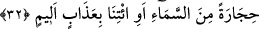

yetiremezler. Çünkü, Kur’an Allah kelamı ve O’nun kadîm sıfatıdır. Onların
söyledikleri ise sonradan olan ve yaratılanın sözüdür. Bunun ise sûret, mânâ, hakikat,
esrâr ve envâr bakımından Kur’an gibi olması mümkün değildir. Bütün yaratılmışlar bir
araya gelseler Kur’an gibi bir kitap yazmaya güç yetiremezler. Nitekim Allah Teâlâ:
“De ki: “Andolsun eğer insanlar ve cinler bu Kur’ân’ın bir benzerini getirmek
üzere toplansalar ve birbirlerine yardım da etseler yine onun benzerini
getiremezler.” (el-İsrâ, 17/88) buyurmuştur.
Mesnevî’de şöyle denilmiştir:
Allahıın kitabı onlara geldiğinde
O kâfirler bu şekilde kınadılar, şöyle dediler:
«Bu esâtîrden, eski masallardan ibarettir
Derin bahisler, yüce hakîkatleri tahkik yoktur
Bunu küçük çocuklar bile anlar
Kabul edilecek yahut edilmeyecek emirlerden ibaret
Yusuf, Yusufıun büklüm büklüm zülüfleri
Yakubıun, Zelîhaının ve gamının hikâyeleri
İşte ortada açık seçik, herkes anlar
Nerde bir söz ki akıl onu anlamayıp hayrete düşsün»
Allah buyurdu: Eğer bu sana kolay görünüyorsa
Suratsız, böyle bir sûre söyleyiver
Cinlerinize, insanlarınıza ve sanat sahiplerine söyleyin
Bu kolay gördüğünüz âyetler gibi bir âyet getirin
32. Yine: “Ey Allah’ım, eğer bu senin katından gelmiş gerçekse üzerimize gökten
taş yağdır yahut bize elem verici bir azap getir!” dediler.
“Yine” Nadr b. Haris ve peşinden gidenlerin şöyle dedikleri vakti hatırla: rivayete
göre Nadr: “Bu öncekilerin masallarından başka bir şey değildir.” deyince Nebî
(s.a.v.): “Yazıklar olsun sana! O Allah’ın kelâmıdır.” buyurdu. Bunun üzerine Nadr
şöyle dedi: “Ey Allah’ım, eğer bu” Kur’an “senin katından gelmiş” indirilmiş bir
“gerçekse” hakikatse, doğruysa cezâ olmak üzere Lût kavminin ve fil ashabının başına
yağdırdığın gibi “üzerimize gökten taş yağdır yahut” bunun dışında diğer ümmetlere
azab ettiğin şeylerle “bize elem verici bir azap getir!” dediler.” Bu sözden maksadları,
Kur’an’la alay edip -hâşâ- onun bâtıl olduğunu kesin olarak ortaya koymaktı.
Nadr b. Hâris hakkında ondan fazla âyet indiği söylenir. İstediği azabı Bedir günü